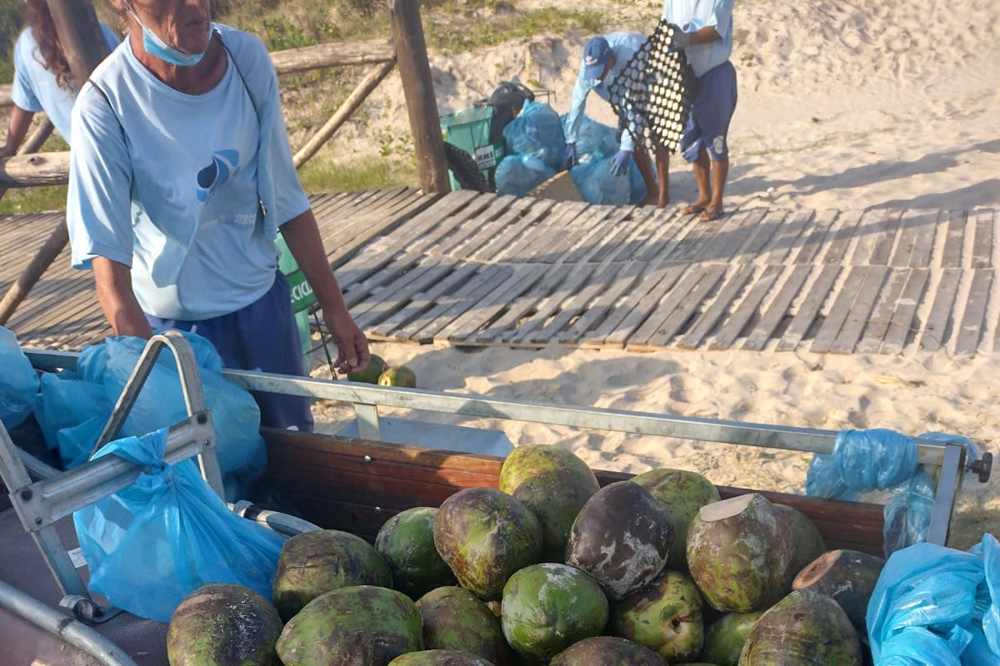

Educação Ambiental: A ReCoco também realiza campanhas educativas sobre a importância da reciclagem de resíduos orgânicos e os benefícios de se adotar práticas mais sustentáveis no dia a dia.
Geração de Emprego: A empresa contribui com a economia local, gerando empregos em áreas de coleta, processamento e distribuição de seus produtos reciclados.

Inclusão Social: Pode promover programas de capacitação e inclusão social, colaborando com comunidades carentes para que possam entender e participar do ciclo de reciclagem de resíduos.